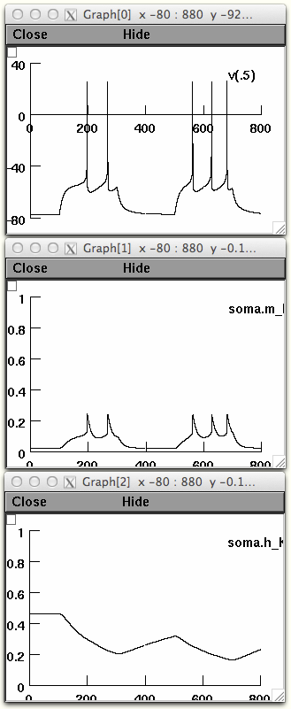
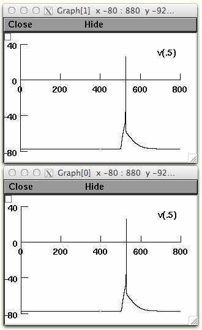
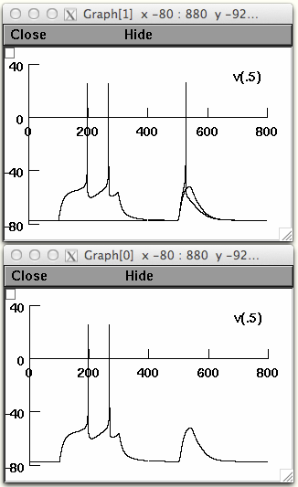

This Document describes how to generate some of figures, from a single model implementation of the model created by Mahon S, Deniau JM, Charpier S, Delord B (2000) Role of a striatal slowly inactivating potassium current in short-term facilitation of corticostriatal inputs: a computer simulation study. Learn Mem 7:357-62. In order to generate some of the figures are analysis of multiple runs and are generated from other programs. I have included these figures and how I or you could generate them. These NEURON simulator files were contributed by Dr Kevin Biddell. NEURON is freely available from http://www.neuron.yale.edu. Usage ----- Either auto-launch from ModelDB (if NEURON is installed and the browser is properly configured) or download and extract the files, and compile the mod files with the method appropriate for your platform (nrnivmodl for linux/unix, mknrndll for mac os x and mswin). For Figure 2A 1. Open the nrngui. 2. Choose file and move the working directory to where the model is located. 3. Load the *.hoc file kmb.mahon.1.hoc 4. Load Session figure2a.ses 5. Press the int & run button You should see this on the screen:  For Figure 3A (if session 2a is open go to file and press quit) 1. Open the nrngui. 2. Choose file and move the working directory to where the model is located. 3. Load the *.hoc file kmb.mahon.1.hoc 4. Load Session figure3a.ses 5. For Fig3Aa Set the time of the current clamps to 1400 6. Press the int & run button You should see graphs like these:  (NOTE: there is noise superimposed on the alpha synapse so the voltage profile may vary, this is the intention) 7. For Fig3Ab set one of the current clamps to start at 100 ms 8. You can save Fig3Aa by right clicking on the upper left corner of one of the graphs and releasing over Keep Lines 9. Press the int & run button. If you selected to keep lines on the upper graph you should see graphs that looks like this:  10. You will get the paired response in both figures, if you would like to separate them right click on the upper corner of the graph and release over Delete 11. Then immediately left click on a part of the line of the paired response. Figure 2B and 3B is a graph of Δt of multiple runs over increasing ISI (or the time in between the first excitation and the second) for current injection and "artificial" Cx stimulation, respectively.